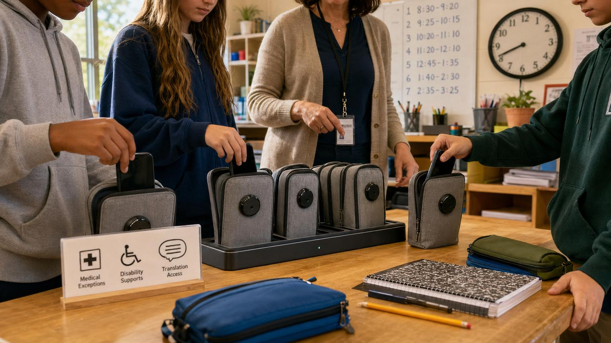

Ideas • Daily Issue
Locked Pouches Pull the Attention Economy Into Homeroom
New York’s bell-to-bell rule, Singapore’s tighter school-day limits and New Zealand’s Away for the Day policy show how fast phone-free school has become a global idea. Pouches can buy quieter hours, but they cannot replace digital literacy, medical exceptions, parent trust or better rules for the platforms outside the classroom.
Read story